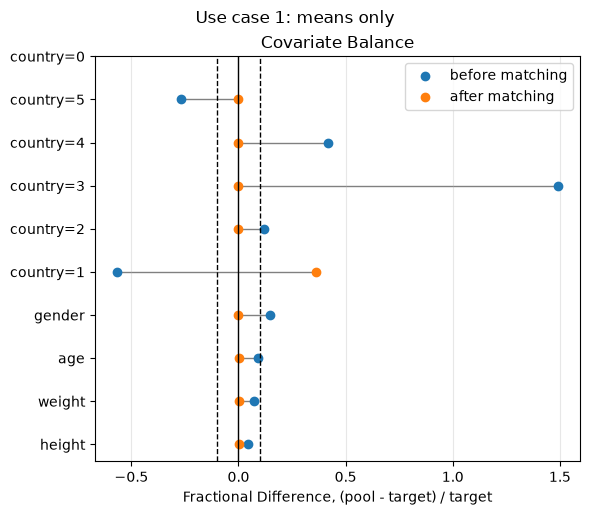
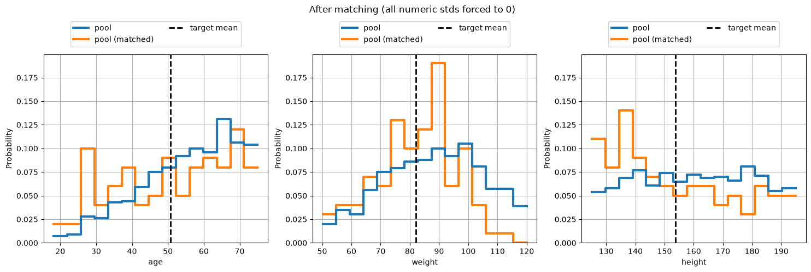
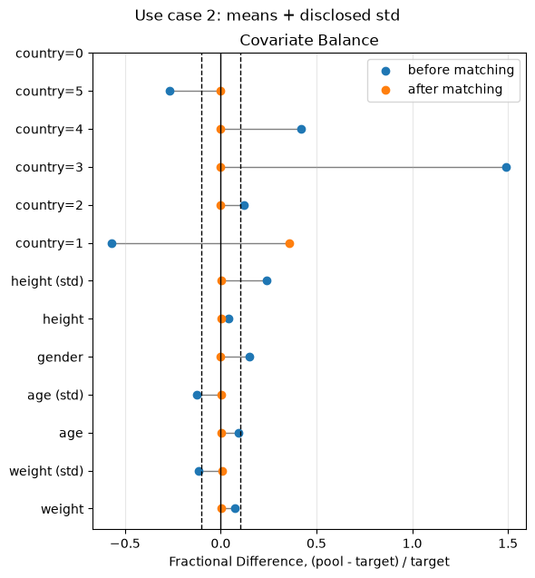
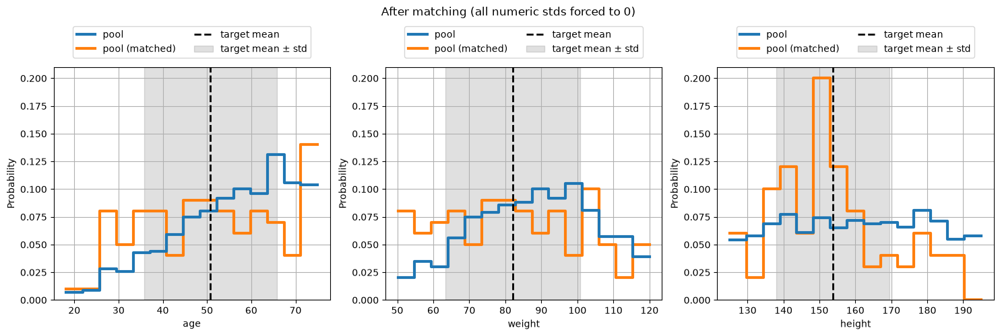
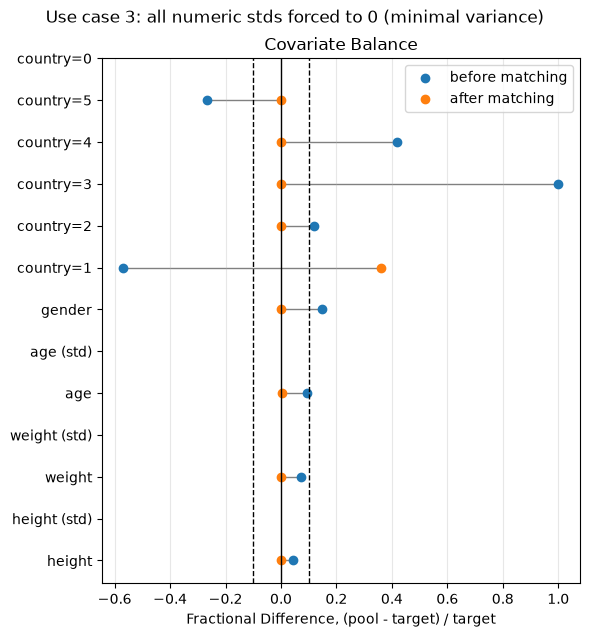
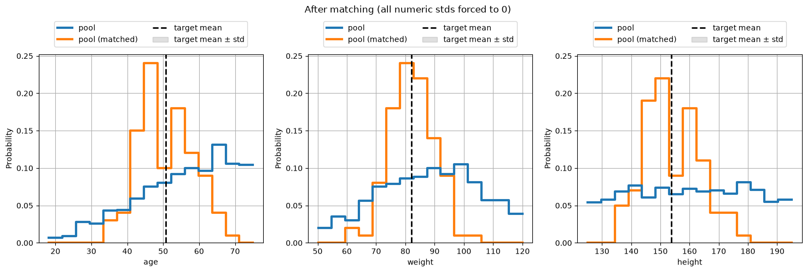

Demo: Matching a pool to an aggregate target
AggregateConstraintSatisfactionMatcher selects a subset of a patient-level pool so that its moments match a target known only through summary statistics – e.g. a published trial’s Table 1 (means, proportions, sometimes standard deviations) – rather than patient-level rows.
This notebook uses pybalance.sim.generate_toy_dataset and deliberately throws away the patient-level target rows, keeping only a few summary numbers computed from them. That’s the only place target information comes from below.
The notebook walks through the moment-aware behavior of the matcher:
a numeric feature’s mean is always matched (it’s required on
AggregateTarget);its variance is additionally constrained only if you disclose a target
stdfor it;disclosing a target
stdof0asks the solver for the minimal-variance subset for that feature – a neat trick for finding the most homogeneous matching subgroup.
[ ]:
import logging
import matplotlib.pyplot as plt
import pandas as pd
from pybalance.lp import AggregateConstraintSatisfactionMatcher
from pybalance.sim import generate_toy_dataset
from pybalance.utils import AggregateTarget, MatchingData, MatchingHeaders
from pybalance.visualization import (
plot_categoric_features,
plot_fractional_difference,
plot_numeric_features,
)
%matplotlib inline
# show the matcher's CP-SAT solver output
logging.basicConfig(level=logging.INFO, format="%(message)s", force=True)
1. Synthetic data, and “disclosing” only a few numbers
generate_toy_dataset returns patient-level pool and target populations – entirely simulated, no real patients. We keep the pool, but for the target we compute a handful of summary statistics (as if reading them off a published Table 1) and then delete the patient-level target rows, so nothing below this cell can accidentally use them.
[3]:
m = generate_toy_dataset(n_pool=1000, n_target=100, seed=7)
pool = m.get_population("pool").drop(columns=[m.population_col])
target_patient_level = m.get_population("target").drop(columns=[m.population_col])
# Keep the feature set small so the solver stays quick for a demo.
headers = MatchingHeaders(numeric=["age", "weight", "height"], categoric=["gender", "country"])
print(f"pool: {len(pool)} (synthetic) patients")
print(f"target: {len(target_patient_level)} (synthetic) patients -- patient-level rows discarded below")
pool[headers.all].head()
pool: 1000 (synthetic) patients
target: 100 (synthetic) patients -- patient-level rows discarded below
[3]:
| gender | country | age | weight | height | |
|---|---|---|---|---|---|
| 0 | 0.0 | 4 | 69.436489 | 79.144533 | 155.189260 |
| 1 | 1.0 | 5 | 28.771438 | 97.734561 | 175.270602 |
| 2 | 0.0 | 2 | 62.640154 | 85.170055 | 136.648640 |
| 3 | 0.0 | 3 | 68.907932 | 90.705549 | 189.959952 |
| 4 | 1.0 | 3 | 49.571169 | 76.708193 | 133.787109 |
[4]:
# "Disclosed" summary statistics -- pretend these are the only numbers a
# published Table 1 gives us about the target.
age_mean = float(target_patient_level["age"].mean())
age_std = float(target_patient_level["age"].std())
height_mean = float(target_patient_level["height"].mean())
height_std = float(target_patient_level["height"].std())
weight_mean = float(target_patient_level["weight"].mean())
weight_std = float(target_patient_level["weight"].std())
gender_rates = {
k: float(v) for k, v in target_patient_level["gender"].value_counts(normalize=True).items()
}
country_rates = {
k: float(v) for k, v in target_patient_level["country"].value_counts(normalize=True).items()
}
n_target = len(target_patient_level)
# From here on, only the disclosed numbers above exist -- no patient-level target data.
del target_patient_level
print(f"age: mean={age_mean:.1f}, std={age_std:.1f}")
print(f"weight: mean={weight_mean:.1f}, std={weight_std:.1f}")
print(f"height: mean={height_mean:.1f}, std={height_std:.1f}")
print(f"gender: {gender_rates}")
print(f"country: {country_rates}")
age: mean=50.8, std=15.0
weight: mean=82.1, std=18.7
height: mean=153.8, std=15.7
gender: {0.0: 0.55, 1.0: 0.45}
country: {1: 0.25, 2: 0.2, 4: 0.2, 5: 0.15, 3: 0.11, 0: 0.09}
2. A small helper
We’ll build several AggregateTargets below with different std_modes, controlling whether/how the numeric features’ (age, weight, height) variances are constrained, and compare the resulting matches. This helper builds the target, wraps it with the pool in a MatchingData, and runs AggregateConstraintSatisfactionMatcher. gender’s and country’s rates are always disclosed, as categoric baselines.
To inspect the results, use the library’s own MatchingData.describe() – it reports pool vs. target side by side (N, categoric rates, numeric mean/std/quantiles) for both patient-level and aggregate targets alike, so there’s no need to write a custom summary printer.
[5]:
def match_with_std_mode(std_mode):
"""
Match `pool` to the disclosed target. std_mode controls whether/how the
numeric features' (age, weight, height) variances are constrained:
- "none" -> no std disclosed for any numeric feature; only their
means are matched, so their spreads are unconstrained.
- "disclosed" -> each numeric feature's actual std is disclosed too, so
the matcher additionally constrains its variance.
- "zero" -> every numeric feature's std is forced to 0, asking the
solver for the minimal-variance subset simultaneously
for all three.
gender's and country's rates are always disclosed, as categoric baselines.
"""
numeric = {
"age": {"mean": age_mean},
"weight": {"mean": weight_mean},
"height": {"mean": height_mean},
}
if std_mode == "disclosed":
numeric["age"]["std"] = age_std
numeric["weight"]["std"] = weight_std
numeric["height"]["std"] = height_std
elif std_mode == "zero":
numeric["age"]["std"] = 0.0
numeric["weight"]["std"] = 0.0
numeric["height"]["std"] = 0.0
elif std_mode != "none":
raise ValueError(f"Unknown std_mode: {std_mode!r}")
target = AggregateTarget(
n=n_target,
numeric=numeric,
categoric={"gender": gender_rates, "country": country_rates},
headers=headers,
)
matching_data = MatchingData(pool=pool, target=target, headers=headers)
matcher = AggregateConstraintSatisfactionMatcher(
matching_data, time_limit=60, num_workers=1, verbose=True
)
return matching_data, matcher.match()
3. Use case 1 – solve just for means
No numeric feature’s std is passed to AggregateTarget, so the matcher is under no obligation to control any of their spreads – only age, weight and height’s means (and gender/country’s rates) are constrained. Expect all three numeric features’ matched stds to land wherever an unconstrained mean-match happens to leave them.
[6]:
before_a, after_a = match_with_std_mode("none")
Scaling features by factor 240.00 in order to use integer solver with <= 0.4801% loss.
Solving for match population with pool size = 100 and target size = 100 (aggregate), optimizing balance (no max_mismatch cap).
Matching on 8 dimensions ...
Building model variables and constraints ...
Calculating bounds on feature variables ...
Applying size constraints on pool ...
Solving with 1 workers ...
Initial balance score: 0.1757
=========================================
Solution 1, time = 0.00 m
Objective: 40000.0
Balance (beta): 0.0068
Patients (pool): 100
Patients (target): 100 (aggregate)
=========================================
Solution 2, time = 0.00 m
Objective: 4700.0
Balance (beta): 0.0018
Patients (pool): 100
Patients (target): 100 (aggregate)
=========================================
Solution 3, time = 0.01 m
Objective: 2700.0
Balance (beta): 0.0026
Patients (pool): 100
Patients (target): 100 (aggregate)
=========================================
Solution 4, time = 0.01 m
Objective: 1200.0
Balance (beta): 0.0022
Patients (pool): 100
Patients (target): 100 (aggregate)
=========================================
Solution 5, time = 0.01 m
Objective: 1100.0
Balance (beta): 0.0024
Patients (pool): 100
Patients (target): 100 (aggregate)
=========================================
Solution 6, time = 0.01 m
Objective: 800.0
Balance (beta): 0.0024
Patients (pool): 100
Patients (target): 100 (aggregate)
=========================================
Solution 7, time = 0.04 m
Objective: 600.0
Balance (beta): 0.0021
Patients (pool): 100
Patients (target): 100 (aggregate)
=========================================
Solution 8, time = 0.05 m
Objective: 400.0
Balance (beta): 0.0021
Patients (pool): 100
Patients (target): 100 (aggregate)
=========================================
Solution 9, time = 0.11 m
Objective: 300.0
Balance (beta): 0.0022
Patients (pool): 100
Patients (target): 100 (aggregate)
Status = FEASIBLE
Number of solutions found: 9
[7]:
(
before_a
.describe(quantiles=[])
.join(
after_a.describe(quantiles=[]),
rsuffix='_matched'
)[['pool', 'pool_matched', 'target']]
)
[7]:
| pool | pool_matched | target | ||
|---|---|---|---|---|
| population size | N | 1.000 | 1.00 | 100.00 |
| gender | 0.0 | 0.483 | 0.55 | 0.55 |
| 1.0 | 0.517 | 0.45 | 0.45 | |
| country | 1.0 | 0.108 | 0.34 | 0.25 |
| 2 | 0.224 | 0.20 | 0.20 | |
| 3 | 0.274 | 0.11 | 0.11 | |
| 4 | 0.284 | 0.20 | 0.20 | |
| 5 | 0.110 | 0.15 | 0.15 | |
| 0.0 | NaN | NaN | 0.09 | |
| age | mean | 55.520 | 50.91 | 50.80 |
| std | 13.110 | 15.78 | NaN | |
| weight | mean | 88.020 | 82.23 | 82.08 |
| std | 16.550 | 13.73 | NaN | |
| height | mean | 160.310 | 153.94 | 153.80 |
| std | 19.500 | 20.84 | NaN |
[8]:
plot_fractional_difference(before_a, after_a)
plt.suptitle("Use case 1: means only", y=1.02);

[9]:
if 'pool (matched)' not in after_a.populations:
before_a.append(after_a.get_population('pool'), name='pool (matched)')
plot_numeric_features(before_a, cumulative=False, bins=15, col_wrap=3)
plt.suptitle("After matching (all numeric stds forced to 0)", y=1.08);

4. Use case 2 – add std constraints for numeric variables
Now age, weight and height each disclose their actual std too, so the matcher additionally constrains all three variances toward their disclosed values. Every numeric feature’s mean and std should land close to its disclosed target.
[10]:
before_b, after_b = match_with_std_mode("disclosed")
Scaling features by factor 240.00 in order to use integer solver with <= 0.4801% loss.
Scaling variance terms by factor 2 (vs. mean-term factor 240.0) so neither dominates the objective purely due to units.
Solving for match population with pool size = 100 and target size = 100 (aggregate), optimizing balance (no max_mismatch cap).
Matching on 8 dimensions ...
Building model variables and constraints ...
Calculating bounds on feature variables ...
Applying size constraints on pool ...
Applying variance constraints on 3 feature(s) with disclosed std ...
Solving with 1 workers ...
Initial balance score: 0.1745
=========================================
Solution 1, time = 0.01 m
Objective: 15416.0
Balance (beta): 0.0027
Patients (pool): 100
Patients (target): 100 (aggregate)
=========================================
Solution 2, time = 0.01 m
Objective: 7789.0
Balance (beta): 0.0018
Patients (pool): 100
Patients (target): 100 (aggregate)
=========================================
Solution 3, time = 0.01 m
Objective: 5801.0
Balance (beta): 0.0023
Patients (pool): 100
Patients (target): 100 (aggregate)
=========================================
Solution 4, time = 0.01 m
Objective: 5405.0
Balance (beta): 0.0023
Patients (pool): 100
Patients (target): 100 (aggregate)
=========================================
Solution 5, time = 0.01 m
Objective: 4467.0
Balance (beta): 0.0021
Patients (pool): 100
Patients (target): 100 (aggregate)
=========================================
Solution 6, time = 0.02 m
Objective: 3192.0
Balance (beta): 0.0022
Patients (pool): 100
Patients (target): 100 (aggregate)
=========================================
Solution 7, time = 0.02 m
Objective: 3133.0
Balance (beta): 0.0023
Patients (pool): 100
Patients (target): 100 (aggregate)
=========================================
Solution 8, time = 0.03 m
Objective: 2842.0
Balance (beta): 0.0020
Patients (pool): 100
Patients (target): 100 (aggregate)
=========================================
Solution 9, time = 0.04 m
Objective: 2817.0
Balance (beta): 0.0021
Patients (pool): 100
Patients (target): 100 (aggregate)
=========================================
Solution 10, time = 0.05 m
Objective: 2554.0
Balance (beta): 0.0020
Patients (pool): 100
Patients (target): 100 (aggregate)
=========================================
Solution 11, time = 0.06 m
Objective: 2180.0
Balance (beta): 0.0022
Patients (pool): 100
Patients (target): 100 (aggregate)
=========================================
Solution 12, time = 0.08 m
Objective: 1847.0
Balance (beta): 0.0020
Patients (pool): 100
Patients (target): 100 (aggregate)
=========================================
Solution 13, time = 0.18 m
Objective: 1831.0
Balance (beta): 0.0020
Patients (pool): 100
Patients (target): 100 (aggregate)
=========================================
Solution 14, time = 0.18 m
Objective: 1574.0
Balance (beta): 0.0020
Patients (pool): 100
Patients (target): 100 (aggregate)
=========================================
Solution 15, time = 0.21 m
Objective: 1453.0
Balance (beta): 0.0020
Patients (pool): 100
Patients (target): 100 (aggregate)
=========================================
Solution 16, time = 0.25 m
Objective: 1254.0
Balance (beta): 0.0020
Patients (pool): 100
Patients (target): 100 (aggregate)
=========================================
Solution 17, time = 0.45 m
Objective: 1234.0
Balance (beta): 0.0021
Patients (pool): 100
Patients (target): 100 (aggregate)
=========================================
Solution 18, time = 0.52 m
Objective: 782.0
Balance (beta): 0.0023
Patients (pool): 100
Patients (target): 100 (aggregate)
Status = FEASIBLE
Number of solutions found: 18
[11]:
(
before_b
.describe(quantiles=[])
.join(
after_b.describe(quantiles=[]),
rsuffix='_matched'
)[['pool', 'pool_matched', 'target']]
)
[11]:
| pool | pool_matched | target | ||
|---|---|---|---|---|
| population size | N | 1.000 | 1.00 | 100.00 |
| gender | 0.0 | 0.483 | 0.55 | 0.55 |
| 1.0 | 0.517 | 0.45 | 0.45 | |
| country | 1.0 | 0.108 | 0.34 | 0.25 |
| 2 | 0.224 | 0.20 | 0.20 | |
| 3 | 0.274 | 0.11 | 0.11 | |
| 4 | 0.284 | 0.20 | 0.20 | |
| 5 | 0.110 | 0.15 | 0.15 | |
| 0.0 | NaN | NaN | 0.09 | |
| age | mean | 55.520 | 50.91 | 50.80 |
| std | 13.110 | 15.08 | 15.02 | |
| weight | mean | 88.020 | 82.24 | 82.08 |
| std | 16.550 | 18.84 | 18.72 | |
| height | mean | 160.310 | 153.95 | 153.80 |
| std | 19.500 | 15.80 | 15.72 |
[12]:
plot_fractional_difference(before_b, after_b)
plt.suptitle("Use case 2: means + disclosed std", y=1.02);

[13]:
if 'pool (matched)' not in after_b.populations:
before_b.append(after_b.get_population('pool'), name='pool (matched)')
plot_numeric_features(before_b, cumulative=False, bins=15, col_wrap=3)
plt.suptitle("After matching (all numeric stds forced to 0)", y=1.08);

5. Use case 3 – add std=0 constraints for numeric variables
Setting every numeric feature’s target std to 0 asks the solver for the minimal-variance subset of the pool simultaneously for age, weight and height. All three matched stds should collapse well below both use cases above – while their means (and gender/country’s rates) stay just as well matched as before.
(You may see a Detected constant feature(s) in target population: age,weight,height warning – that’s the balance calculator flagging the zero-variance targets for its own diagnostics; it’s expected and harmless here.)
You may also notice country’s fractional difference (and its bar chart further down) can’t be driven to zero for every level: this toy pool structurally contains no country=0 patients at all (its generator never produces one), while the target discloses a small country=0 rate. No subset of the pool can conjure up a category the pool doesn’t contain – a good reminder that subset-matching can only re-weight/re-select what’s already present.
We also show the clip keyword on plot_fractional_difference here: it clips fractional differences to [-clip, clip] before plotting, which is useful when a feature’s target value is close to zero (a tiny target can otherwise produce a huge fractional difference that squashes every other feature’s bar in comparison).
[14]:
before_c, after_c = match_with_std_mode("zero")
Detected constant feature(s) in target population: age,weight,height.
Scaling features by factor 240.00 in order to use integer solver with <= 0.4801% loss.
Scaling variance terms by factor 2 (vs. mean-term factor 240.0) so neither dominates the objective purely due to units.
Solving for match population with pool size = 100 and target size = 100 (aggregate), optimizing balance (no max_mismatch cap).
Matching on 8 dimensions ...
Building model variables and constraints ...
Calculating bounds on feature variables ...
Applying size constraints on pool ...
Applying variance constraints on 3 feature(s) with disclosed std ...
Solving with 1 workers ...
Initial balance score: 0.2143
=========================================
Solution 1, time = 0.01 m
Objective: 199450.0
Balance (beta): 0.0069
Patients (pool): 100
Patients (target): 100 (aggregate)
=========================================
Solution 2, time = 0.01 m
Objective: 197682.0
Balance (beta): 0.0056
Patients (pool): 100
Patients (target): 100 (aggregate)
=========================================
Solution 3, time = 0.01 m
Objective: 196910.0
Balance (beta): 0.0055
Patients (pool): 100
Patients (target): 100 (aggregate)
=========================================
Solution 4, time = 0.01 m
Objective: 196601.0
Balance (beta): 0.0059
Patients (pool): 100
Patients (target): 100 (aggregate)
=========================================
Solution 5, time = 0.02 m
Objective: 195586.0
Balance (beta): 0.0062
Patients (pool): 100
Patients (target): 100 (aggregate)
Status = OPTIMAL
Number of solutions found: 5
[15]:
(
before_c
.describe(quantiles=[])
.join(
after_c.describe(quantiles=[]),
rsuffix='_matched'
)[['pool', 'pool_matched', 'target']]
)
[15]:
| pool | pool_matched | target | ||
|---|---|---|---|---|
| population size | N | 1.000 | 1.00 | 100.00 |
| gender | 0.0 | 0.483 | 0.55 | 0.55 |
| 1.0 | 0.517 | 0.45 | 0.45 | |
| country | 1.0 | 0.108 | 0.34 | 0.25 |
| 2 | 0.224 | 0.20 | 0.20 | |
| 3 | 0.274 | 0.11 | 0.11 | |
| 4 | 0.284 | 0.20 | 0.20 | |
| 5 | 0.110 | 0.15 | 0.15 | |
| 0.0 | NaN | NaN | 0.09 | |
| age | mean | 55.520 | 50.92 | 50.80 |
| std | 13.110 | 7.63 | 0.00 | |
| weight | mean | 88.020 | 82.22 | 82.08 |
| std | 16.550 | 7.77 | 0.00 | |
| height | mean | 160.310 | 153.94 | 153.80 |
| std | 19.500 | 9.55 | 0.00 |
[16]:
plot_fractional_difference(before_c, after_c, clip=1.0)
plt.suptitle("Use case 3: all numeric stds forced to 0 (minimal variance)", y=1.02);

[17]:
if 'pool (matched)' not in after_c.populations:
before_c.append(after_c.get_population('pool'), name='pool (matched)')
plot_numeric_features(before_c, cumulative=False, bins=15, col_wrap=3)
plt.suptitle("After matching (all numeric stds forced to 0)", y=1.08);

Takeaways
AggregateTargetonly needs a mean per numeric feature; a std is optional and, when given, adds a variance constraint the solver actually enforces (it’s linear in the decision variables, so this is cheap for the CP-SAT solver).Across use cases 1-3, every feature’s mean stays well matched throughout – disclosing/ constraining variance doesn’t come at the expense of mean-matching elsewhere. That’s a consequence of how the two objective terms are scaled to be commensurate internally.
A disclosed std of
0is a simple way to ask “give me the most homogeneous subset of the pool (for these features) that still matches everything else” – useful for sensitivity analyses or finding a low-variance subgroup, and it composes across multiple features at once.